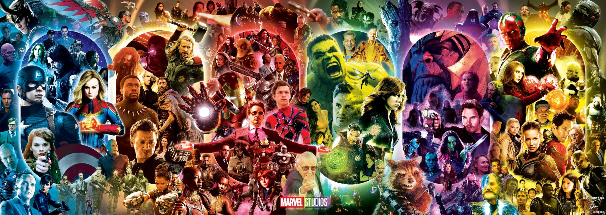

Hello, I'm David, a web developer in Omaha, NE. My passions are programming, videogames, superheroes, anime, and trail running. I especially enjoy going for relaxing jogs in the rain. My favorite game at the moment is Final Fantasy XIV. I'm also continually excited to see what new VTubers arise.
Each weekend I meet with friends to watch anime as a group and catchup on life. The anime we watch are as varied as any other movies or series out there. There are still so many stories and intense action moments only possible through animation.
I've been reading comics since I was kid in the early 90s buying them with mowing and paperboy money. Although I seem to find myself reading more manga these days, it's still exciting seeing superheroes become increasingly mainstream. I eagerly anticipate a more comic faithful X-Men reaching the MCU.